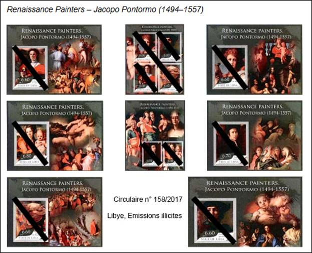
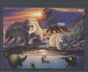
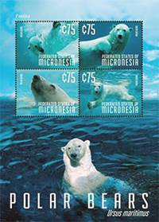
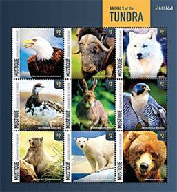
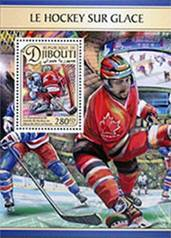
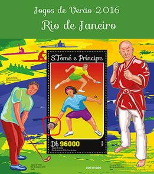

The Viruses of Stamp Collecting: Illegals and Abusives
The Coronaviruses of Stamp Collecting:
Illegal and Abusive Stamp Issues
Victor Manta, PWO
Introduction
Let us start with some definitions and considerations that we owe to Mr. Richard Gratton , FRPSC, AIEP, Secretary of the Commission to Combat False and Forgeries of the International Federation of Philately (FIP).
The Illegal stamps are those that were issued without the country's consent and its legal postal authorities. Many of these issues have been mentioned in UPU IB circulars.
Abusive stamps are those stamps that do not follow the UPU's Code of Ethics.
Both are theoretically prohibited in FIP exhibitions.
UPU Circulars, Evolutions and Limits
Alerted by the strong growth of illegal emissions, the Universal Postal Union (UPU), through its international office (IB) in Berne, has begun publishing the so-called UPU Circulars, in which some postal administrations have denounced postal stamps that were issued without their authorization.
The number of Circulars has increased over time, reaching for example in 2001 the number of fifteen. Source
The main contribution to the promotion, preliminary research and publication of the Circulars was the head of Philately Dept. of the UPU's BI, Maria Libera. Ms. Libera was also the head of the UPU's Ethics Office, which was announced in 2008. Source.
As a result of Ms. Libera's change of responsibilities, and later, upon her retirement, the number of circulars denouncing illegal stamps began to decline until 2018, when no denouncing circular was issued.

A great limitation of the Circulars, excepting some of the last ones, was that there no images of denounced stamps were displayed. References such as "wild animals" do not allow their precise identification in the ocean of stamps, especially of those abusive ones, which flooded the global philatelic market at the same time.
Another reason cited by the UPU for reducing the number of Circulars was the emergence of WNS, which was about, in the hope of UPU, to definitively solve the problems of illegal stamps. But the things haven't evolved this way.
The World Association for Developing of Philately Numbering System (WNS)
WNS was created to combat illegal issues. The creating and publishing from 2002 a database of all stamps issued by all UPU member countries was to allow the easy identification of all illegal stamps, only the legal ones being listed on the WMS.
The idea proved utopian because some administrations, partially privatized, refused to participate from the beginning to it (Germany, the Netherlands), others (Aland, Belgium, Finland, Norway) withdrew along the way, while many others stopped or delayed/postponed to send stamps to the UPU for their registration. Source.
It should be noted that to the WNS failure contributed the very high price of registration, set by the UPU at 50 Swiss Francs for each stamp.
An expected consequence, confirmed at the World Stamp Show, NYC, 2016
Below we reproduce excerpts from an article, published on the website of Philatelic Webmasters Organization (PWO) by Ms. Maria Libera, who has already been mentioned above.
The huge World Stamp Show (WSS) opened in New York on May 28, 2016 and closed on June 4, 2016. Organized under the direct patronage of the International Federation of Philately (IPF), it included the display of 4,146 frames of the best competitive stamp exhibitions from around the world. Tens of thousands of visitors were able to admire the many facets of the wonderful world of stamp collection and spread their impressions around the world related to this exceptional celebration of the stamp collection.

In addition, I thought it would be useful, at the same time, to look at some competitive stamp presentations to see how stamp collectors organized the themes they were exhibiting. It was by conducting a random check of a number of these pieces that I discovered several that contained individual illegal "stamps" and "leaf blockers." These findings were communicated to several show officials before the awards were awarded, but to no avail. In the end, I discovered that many of these exhibits containing illegal stamps had indeed been awarded with an award, and what was particularly disturbing was that many of these exhibits were in the Youth category.
Therefore, it is difficult to understand why a panel of experts was not present at the WSS New York 2016, or if it was present, how it failed to identify the presence of illegal stamps in several exhibits.
On the web page Ms. Libera gives twelve examples of illegal stamps that were awarded prizes, the list not being exhaustive. So, what was the point of using of FIP specialists and of their signed report? We note that illegal stamps have thus reached the heart of the philatelic movement, that they are not known as being what they really are, and that they are wreaking havoc throughout the philatelic world.
The proliferation of abusive issues
It's about (...) "legal" issues but described as "abusive" by the Universal Postal Union (UPU) because they do not comply with the rules of the WADP Code of Ethics adopted at the 24th Congress by the UPU member countries. These issues are unrelated to sports (or other subjects, like culture, characters, etc.) of the issuing countries or with their events (...). Source: French Association of Table Tennis Stamps Collectors. https://afctt.wordpress.com/timbres-abusifs-illegaux/tennis-table-timbres-abusifs-stamps-tischtennis/
For a long time, the philatelic market is invaded by the super productions of the Inter-Governmental Philatelic Corporation (IGPC) of New York, which had its first client, Ghana, in 1957. Today, it describes itself as the general postal consultant for postal administrations in more than 70 countries. It is known to have invaded the philatelic market with endless products from small islands such as Granada-Grenadines, St. Vincent, etc.
After Wikipedia, "IGPC claims to produce nearly half of the various postage stamps issued each year, but they have been criticized for inappropriate and excessive productions." More recent examples are the products presented by IGPC at the Rossica 2014 exhibition in Russia, such as polar bears on a miniature sheet issued by Micronesia, a sub-region of Oceania, comprising thousands of small islands. Micronesia has a warm, tropical marine climate that is inadequate for polar bears. Another IGPC product, also presented at Rossica, was published under the name Mustique, a private island of the Grenadines, population 500 to 1300. The climate of this Caribbean island is tropical and for this reason one will not find there animals of the tundra. As the Russians say, the paper endures everything...


IGPC abusive issues
On the plus side, the IGPC products have a rather good design and printing quality. IGPC doesn't print the stamps it designs. Source
A relatively newcomer is the Lithuanian company Stamperija , which quickly managed to become the official agent of many countries, such as Angola (2006-2011), Burundi (2011-2013), Cape Verde (trade only), Central African Republic, Comoros (2008-2011), Ethiopia (trade only), Guinea, Guinea-Bissau, Côte d'Ivoire, the Maldives, Mozambique, Namibia (trade only), Niger, Sao Tomé and Prince, Solomon Islands, Togo and Uganda.
The company claims to have as its object of activity only the "wholesale and retail trade in postage stamps of various countries", but we found out that it also prints their stamps. In very few cases, when Stamperija registered the stamps produced by it on the WNS, it appeared as being a printer. An example is here (Princess Diana): https://www.wnsstamps.post/en/stamps/SB041.13, where we read: "Printer: Stamperija Ltd", which is obviously contrary to the UPU Code of Deontology.

Stamperija abusive issuesShort excerpts from this code:
7.6 Establish separate contractual arrangements for the printers responsible for producing the stamps and the agents responsible for marketing them.
7.7 Postage stamp printing should only be granted to security printers who have adhered to the Postage Stamp Security Printer Code of Ethics and have obtained or have undertaken the certification as security printer.
As expected, Stamperija is not listed as a security printer. Source
Returning to what issued and printed Stamperija, for the Solomon Island Post Stamperija issued an average of about 500 different stamps and 150 different blocks per year , as well in 2013 as in 2014, this accordingly to the Scott catalog that listed them all in 2015!
Surprisingly, there is a close relationship between the Solomon Islands Post site and the Stamperija sales site. On its website, the Solomon Islands Post sends its potential customers to buy stamps issued after 2012 directly to the Stamperija sales site. Source
Abusive stamps, philatelic press and international catalogues
A powerful selling point for Stamperija is that it can display for its offer the catalog numbers of Michel, Yvert and Scott on its sales site. I was amazed by the many listings published online for stamps, produced by Stamperija, by the rather reserved Scott catalog.
From a recent email discussion with one of Scott's officials I learned that Scott's publishing criteria do not take into account the Code of ethics elaborated by the UPU, and that he learned about its existence from myself... Scott uses only his own publishing criteria, ones that haven't changed for decades.
Some philatelic magazines, such as the well-known American philatelic magazine Linn's (related to the Scott catalogues), is advertising Stamperija's production. Just as an example, here is a headline: "Donald Trump is making a postal appearance on a miniature sheet of the Central African Republic." A short excerpt from Linn's:
"Donald Trump is among those honored as a New York celebrity on a stamp of the Central African Republic. Stamps are issued to commemorate World Stamp Show-NY 2016, an international stamp show that will take place from May 28 to June 4 at the Javits Center, 655 W. 34th St., New York. At this fair, the post office of the Central African Republic is represented by Stamperija, a postal agency located in Vilnius, Lithuania." Source
At Stamperija's impressive boot from the World Stamp Show-NY 2016, a boot's seller told a customer next to me that the interest for this souvenir sheet is very big and that it sells very well. Obviously, I wasn't interested in propagation of such philatelic viruses…
UPDATE: The World Wide Press about the Stamperija issues
In recent years several African countries have appointed a Lithuanian-based outfit called Stamperija to design and print their stamps. Stamperija, philatelists grumble, has flooded the market with tat. Collectors calculate that, with the help of Stamperija, Sierra Leone, with a population of 7.6m and a barely functioning postal service, churned out 1,566 different stamps last year, compared with 268 released by Britain and 139 by India.
Stamperija's gaudy designs are not to everyone's liking. And producing so many stamps can lead to mistakes. A set of Stamperija stamps issued in 2014 for the CAR turned out not to picture Marilyn Monroe, as planned, but a New York drag artist. Few of Stamperija's clients seem bothered, though. “It is willing buyer, willing seller,” says a postal official in Sierra Leone. “So what's the problem?”
Short excerpt from "The Economist", August 20, 2020. Source. Full text: here .
Conclusions
UPU circulars opposing illegal stamps have all but disappeared, although the number of illegal stamps has not decreased over time.
The UPU/WADP/WNS has failed in the fight against illegal stamps, the registering with WNS remaining expensive for postal administrations (millions of Swiss francs already invested by them) and WNS being full of holes.
The FIP, apart from its Commission against the False and Forgeries, meanwhile marginalized, does not perform its minimal duty to prevent the penetration of illegal and abusive stamps in philatelic exhibitions and thus does not contribute to the education of the younger generations.
The philatelic press rarely addresses the influence of these harmful stamps on stamp collecting. The exception is a few philatelic sites, usually little known, even if they tackle more often this painful subject.
The major international catalogues (apart from Stanley Gibbons), grant catalogue numbers to abusive stamps, increasing their attractiveness to uninitiated collectors.
It is up to the postage stamp collectors to inform themselves and take the measures accordingly.

Note. I have attached to this article a brief extract from the multitude of illegal and abusive stamps that have circulated or circulate on the commercial sites. The quality of their presentation is intentionally reduced.
(*) About the author. Victor Manta is the founder and current president of the Philatelic Webmasters Organization (PWO) and the editor of the website www.pwmo.org , that fights for a long time against harmful stamps. Mr. Manta's main interest refers to thematic stamps and the philately on the Internet. Its philatelic sites have been awarded many times in philatelic site competitions. He is also a well-known philatelic journalist, who has published numerous articles on the web and in printed magazines around the world. An initial version of this article was printed in the March 2020 issue of the well-known French publication Timbres Magazine.
APPENDIX (published on the newsgroup rec.collecting.stamps.discuss the 17/03/2020)
There are two categories of countries that issue harmful stamps.
Some, on whose behalf postage stamps are issued by anonymous producers,
without the approval of the respective countries. These are (rarely)
denounced at the UPU by the damaged countries and appear in the UPU
Circulars of illegal stamps.
Others are issued with the approval of some postal administrations (usually
from poor countries) and distributed by private agents (such as Stamperija)
in huge quantities, far exceeding the postal needs of the respective
countries. They are called abusive.
Here is a recent example of advertising for abusive stamps:
1. No quarantine for the stamp-collecting:
Many collectors are required to stay home because of the quarantine imposed
by their governments which may become boring. Don't forget that this is the
right time to open your stamp albums, to browse and check your stamp
collections and inventory. - The best remedy against quarantine-tedium is
stamp-collecting!
2. Quarantine is a good time for stamp shopping: Printing offers 20-30%
discount for those who are quarantined and all their supporters!
Offer is valid for any stamps or FDC dated 2003-2016. Offer is valid until
30th April 2020 or until further notice.
As a philatelist friend from Canada recently wrote to me: "These xxxxxxxx
even benefit from the pandemic !!!"
Annexe en francaise (publié sur le group de news fr.rec.philatelie le 17.3.2020)
Il existe deux catégories de pays qui émettent des timbres nuisibles.
Certains, au nom desquels des timbres-poste sont émis par des producteurs
anonymes, sans l'approbation des pays respectifs. Ceux-ci sont (rarement)
dénoncés à l'UPU par les pays endommagés et figurent dans les circulaires
UPU des timbres illégaux.
D'autres sont délivrés avec l'approbation de certaines administrations
postales (généralement des pays pauvres) et distribués par des agents privés
(tels que Stamperija) en grandes quantités, dépassant de loin les besoins
postaux des pays respectifs. Ils sont appelés abusifs par la FIP.
Voici un exemple récent de publicité pour des timbres abusifs (traduit de
l'anglais):
1. Pas de quarantaine pour la philatélie :
De nombreux collectionneurs sont tenus de rester chez eux en raison de la
quarantaine imposée par leurs gouvernements qui peut devenir ennuyeuse.
N'oubliez pas que c'est le bon moment pour ouvrir vos albums de timbres,
parcourir et vérifier vos collections de timbres et votre inventaire. - Le
meilleur remède contre l'ennui de quarantaine est la philatélie!
2. La quarantaine est un bon moment pour les achats de timbres: L'imprimerie
offre une remise de 20 à 30% pour ceux qui sont en quarantaine et tous leurs
supporters! L'offre est valable pour tous les timbres ou FDC datés de
2003-2016. L'offre est valable jusqu'au 30 avril 2020 ou jusqu'à nouvel
ordre.
Comme un ami philatéliste du Canada m'a récemment écrit : "Ces xxxxxxxx
profitent même de la pandémie !!!"


Legal notice
• This is a piece of philatelic journalism. It is protected by the free speech and by the liberty of the press doctrines.
• Some short excerpts or cancelled images are sometimes used for illustration/teaching/criticism/commentary purposes only, to properly inform the worldwide readers.
• The fair use doctrine is strictly observed. Each excerpt is properly attributed and respects the rights of the copyright owners.
• We will immediately correct any piece of information that will be proved false.
|